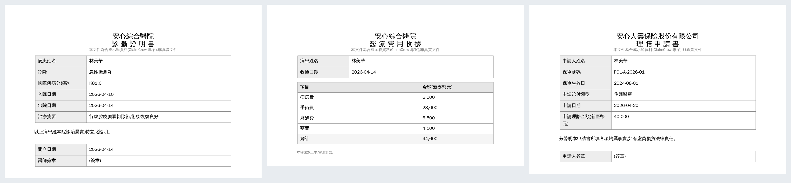
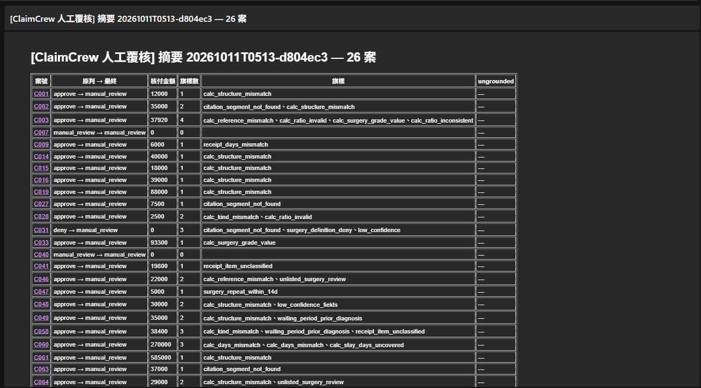
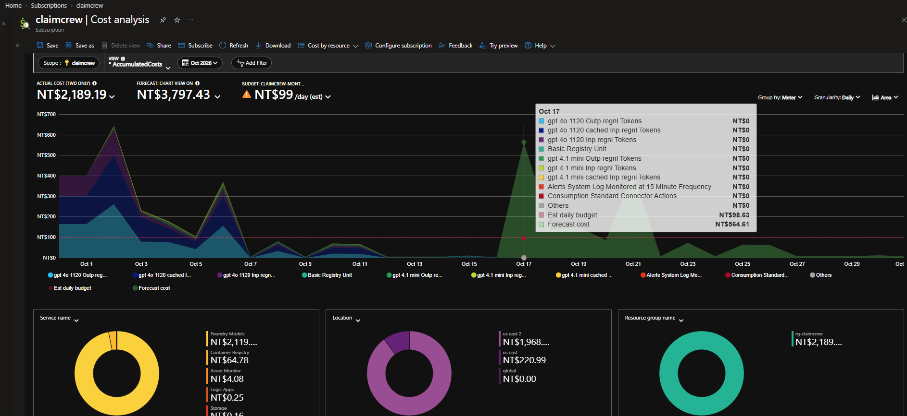
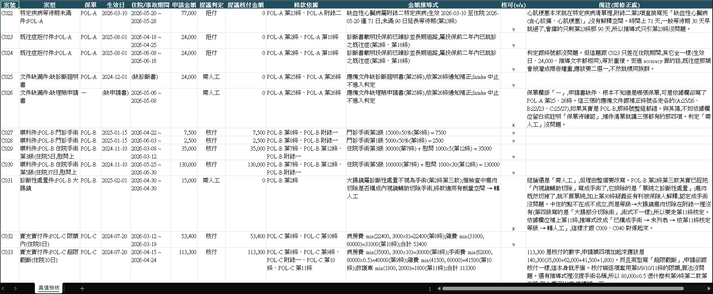

English ｜ 繁體中文
Medical Insurance Claims Adjudication on Azure Managed Services
When an insurer receives a claim (diagnosis certificate + medical receipt + application form), the system extracts the documents, matches policy clauses with verbatim citations, adjudicates, and routes cases to human review. The core design is that the model only reads facts and code decides release: payout amounts are summed from calculation lines and cross-checked against the policy by code, and failing any of 47 deterministic checks sends the case to a human. Cost is a first-class engineering goal too: everything that did not need the cloud was finished at $0, and everything is torn down with Bicep afterwards.

Uploading a request file triggers a run. Code checks sit between and after the two LLM roles, and only code can release a case.
Request file upload (Blob) → Event Grid → Storage Queue
│
▼
Container Apps Job (Entra managed identity, keyless)
│
▼
Document Intelligence (prebuilt receipt / custom neural certificate; Blob cache)
│
▼
Extraction gpt-4.1-mini: unified schema with per-field confidence
│
▼
Intake code: missing documents → human review
│
▼
Decision gpt-4o: AI Search clause retrieval → decision + calculation lines + clause segments
│
▼
code: fill verbatim quotes, sum the payout
│
▼
Gate code: 47 deterministic checks
│
┌────────────────┼────────────────┐
▼ ▼ ▼
auto-approve auto-deny human review
│
▼
Logic Apps digest email → review form → reviews-inbox → stats
Every run is persisted to Blob runs/<run_id>/ · Job failure → Azure Monitor alert
(optional) Repair advisor agent on Foundry Agent Service: writes advice, never changes a decision
| Category | Stack |
|---|---|
| AI Models | Azure OpenAI gpt-4o (decision), gpt-4.1-mini (extraction), Structured Outputs (JSON Schema) |
| Document Understanding | Azure AI Document Intelligence (prebuilt receipt, self-trained custom neural for medical certificates) |
| Retrieval | Azure AI Search (policy clause index) |
| Agent | Azure AI Foundry Agent Service (advisory mode, no release authority) |
| Deterministic Routing | Program-side Gate: 47 checks (clause lookup, amount caps, day counts, waiting periods, confidence thresholds) |
| Orchestration & Triggering | Azure Container Apps Jobs, Event Grid, Storage Queue (KEDA) |
| Storage | Azure Blob Storage (inputs, outputs, review records, DI cache) |
| Human Review | Azure Logic Apps (digest email + review form) |
| Monitoring & Cost | Azure Monitor / Log Analytics (Job failure alerts), Cost Management budget alerts |
| Identity & Security | Microsoft Entra managed identity, RBAC (keyless) |
| Infrastructure | Bicep (IaC), Azure Container Registry, GitHub Actions CI |
| Code | Python 3.11, Pydantic v2 (single source of truth for schemas) |
| Quality | pytest (1,362 tests), Hypothesis, mypy, ruff, pip-audit, hand-written mutation testing (225 mutants) |
| Evaluated, Not Adopted | Azure AI Content Safety (groundedness / Prompt Shields, see ADR-009) |
| Metric | Result |
|---|---|
| Release errors (wrong payout / wrongful auto-deny) | 0 / 0 — all 24 auto-approved payouts exact, all 20 auto-denials correct |
| Dangerous errors (should deny, paid instead) | 0 |
| Post-Gate accuracy / manual-review recall | 0.726 / 1.0 |
| Misquoted citations / clause segment not found | 0 / 1.5% |
| Routed to humans | 28 cases (the price of "when in doubt, ask a human") |

| Item | Amount |
|---|---|
| Total spend, October 2026 development | NT$2,189 (≈ US$68; budget 3,000; ~97% model usage) |
| One 73-case full run | ≈ NT$67 |
| Idle environment | ≈ NT$4–5 / day (ACR + alerts) |
| After teardown | NT$0 / day; teardown takes 15 minutes |

Every meter is NT$0 the day after teardown (Oct 17); the green area from Oct 17 onward is Azure's forecast, not actual spend.
The project was not a straight line of successes but a series of "hit a problem → verify → correct honestly". Key moments:
Resolution: manual mutation testing on the schema conversion layer left mutant M3 (removing the forcing logic for nested objects inside arrays) alive with 13 green tests and 100% line coverage — the existing tests only checked the output for the current models and never asserted the function's core semantics. A direct unit test with a hand-built inline nested structure killed it, ending at 6/6. Concrete proof that coverage is a detector, not a target.
Resolution: the first synthetic PDFs used a CID font (MSung-Light). Viewers rendered them perfectly, but pdfplumber read back scrambled characters — CID fonts write no ToUnicode map, so correct rendering does not mean a correct text layer. Embedding a TTF (wqy-zenhei) fixed it, and "always verify generated files by reading them back" became a standing rule.
Resolution: teardown as cost control — everything is removed ($0 standing cost) and rebuilt with Bicep when needed. The key insight: the repo must keep the ingredients and scripts that regenerate everything (DI training samples and labels, policy PDFs and index scripts), not the artifacts (custom models cannot be exported). Two real teardowns took 27 and then 15 minutes, and the bill was zero the next day.
Resolution: the first 10 cases were hand-written and hand-checked; the next 30 were generated from templates × parameters, with ground-truth amounts produced by a deterministic calculator that shares one definition with the policy parameters and writes its derivation into each case's truth file. Day-count conventions (admission and discharge days inclusive) live in a single function, so they cannot drift.
Resolution: cases, clauses and ground truth all came from the same generator, and self-consistency is not correctness — a misreading of a clause makes all three wrong in exactly the same way, invisible to any automated check. A case-by-case checklist reviewed by a human found 6 errors, the worst being a "missing documents" case filed under the "fraud and misrepresentation" clause; fixing it surfaced a 7th (a procedure missing from the appendix table). All shared one trait: semantic consistency across files (clause number ↔ clause text, case label ↔ field values), while code can only check structure and arithmetic. In one sentence: an AI should not grade the exam it wrote.

Resolution: a Repair agent re-decided Gate-flagged cases with the Gate as a tool, behind six deterministic guards. Two full replays did raise post-Gate accuracy (0.694 → 0.792), but each round released one wrong amount: once the model shrank a receipt amount to satisfy a cap check (C003 −2,000), once it fixed a category and hit a per-segment cap the Gate did not check (C055 +5,000). Every released error mapped to a hole in the Gate, so the repair layer turned "lucky manual reviews" into losses. Repair became advisory only, and the holes were closed with deterministic checks (ADR-008).
Resolution: first the API was shown to be deterministic (10 cases × 3 calls, zero spread), then its discrimination was tested on pairs with known answers: a fabricated pre-existing-condition claim was caught 0/3, a legitimate, sourced deny was flagged as fabricated 3/3, and day-count claims on clean cases raised 12/12 false alarms. The API treats inference as fabrication and clause vocabulary as grounding, which does not fit claims adjudication, so it stays out of the main pipeline. Prompt Shields caught 0/2 Chinese injections, while the existing extraction → schema → Gate boundary released 0 of 9 injected variants with 0 decision flips (ADR-009).